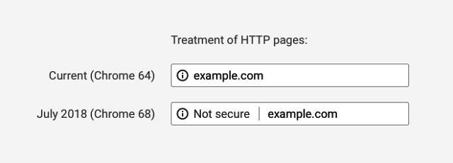
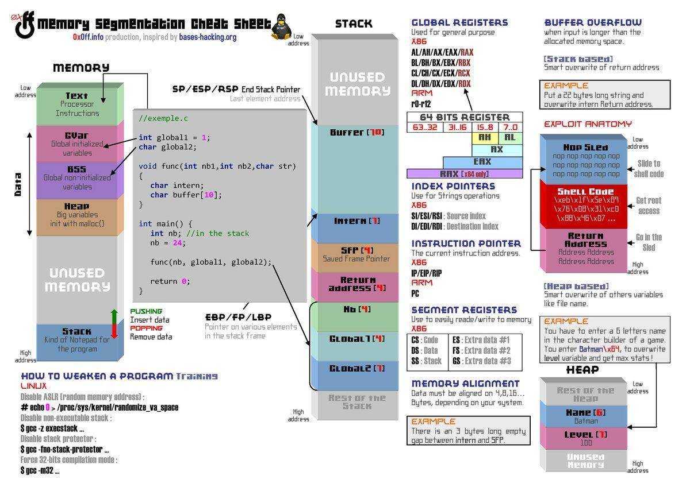

Hello World
CodeTengu Weekly 碼天狗週刊
只要命運的齒輪沒有出差錯，CodeTengu Weekly 都會在 UTC+8 時區的每個禮拜一 AM 10:00 出刊。每週會由三位 curator 負責當期的內容，每個 curator 有各自擅長的領域，如果你在這一期沒有看到感興趣的東西，可能下一期就有了。當然你也可以瀏覽一下前幾期的內容。
目前的 curator 陣容：
- @vinta - I failed the Turing Test - 科幻迷，最近在讀 Dirk Gently 系列
- @saiday - Imnotyourson - 電量給我這種人用就是一種浪費
- @tzangms - Oceanic / 人生海海 - 我最近居然開始在挖礦跟研究區塊鏈了呢
- @fukuball - ImFukuball - 有新工作了，但歡迎直接挖角
- @mingderwang - Ethereum enthusiast
- @kako0507 - 熱愛嘗試新事物的前端工程師
- @chiahsien - 誰能告訴我到底該怎麼處理螢幕觸控壞掉的 iPad Mini 2
- @uranusjr - Smaller Things - 我要成為錯字王
- @kkdai - 態度萬歲 - Learning Deeply....
- @yhsiang
- @johnlinvc - 挑戰自動化家中電器
- @drumrick - 歡迎加入台灣 Kaggle 交流區
- @wancw
你也可以關注我們的 Facebook、Twitter、GitHub 或 Open Source 專案，有很多 weekly 看不到的內容。有任何建議也歡迎來 Gitter 聊聊。
 @fukuball
@fukuball
Ethereum Pet Shop
Ethereum：中級
最近的工作內容包山包海，Smart Contract 跟 Dapp 都要寫一些，不過有研究過的人應該都會覺得這些文件怎麼都寫得這麼亂，然後網路上的文章也都東寫一些西寫一些，許多脈絡都不是很清楚啊！
工程師都喜歡動手做從做中學，介紹給大家專門用來寫 Smart Contract 的 Truffle Framework，這絕對是初學 Smart Contract 的好物！上面也有許多教學文章，範例都蠻清楚有趣的，尤其是這個 Pet Shop Dapp，跟著做一做說不定就可以寫一個自己的 Cryptokitties 服務來玩了～
IPFS 教學和筆記
我很喜歡 IPFS 的理念，網路上的資訊應該要是自由永存的，但現在的網路資訊其實都還是要 Server 作為 host，控制 Server 的人就可以讓內容消失，比如政府想要控制某些內容，那就只要控制提供內容的 Server 就好了。IPFS 就是希望透過 P2P 的機制讓資訊自由永存，只要內容放上 IPFS 了，就永遠不會消失，也就不會被有心人控制，這樣的網路世界才是自由的。
這篇文章算是蠻淺顯易懂的教學，但已經涵蓋大部分內容了，大家應該都可以馬上開始上手使用 IPFS。如果未來 Dapp 的機制更完整了，應該全部都會放上 IPFS 吧，這樣就不需要 Server 了，不過目前 IPFS 也還是很不穩定，希望越來越多人用才能讓 IPFS 的網絡更加健全，期待那一天的到來。
林軒田教授機器學習技法 Machine Learning Techniques 第 15 講學習筆記
Machine Learning：中級
機器學習技法第 15 講主要是講解矩陣分解的方式來解推薦問題，矩陣分解其實在這個領域還蠻常使用到的，真的是必學的技法啊！然後我終於將林軒田教授機器學習課程的筆記寫完了！第 16 講只是一些回顧，如果大家有興趣可以自行點連結前往，雖然我很早就看完了整個課程，但要寫成筆記就是一整個懶，所以就被人說富堅了，我也是千百個不願意啊！
回顧一整個課程，林軒田老師的課程算是涵蓋了蠻多經典的機器學習演算法，能夠對這個領域有個完整的概觀，但如果大家想要深入學習現在最紅的 Deep Learning，那這門課程就著墨不多，建議大家可以去看看李弘毅老師的課程，非常推薦！
 @kako0507
@kako0507
webpack 4: released - Codename: Legato
Webpack 已經出到 v4 啦，這次改版主要有以下改變：
- 效能變得更快，不過因為尚未實作 Multicore ，意味著將來還有更多的改進幅度。
- Mode, #0CJS (Zero-Configuration):
- 新增了兩個 mode options ， "production" 以及 "development" ，透過不同的 mode 來自動選擇最適合的 bundle 流程，這裡有更詳細的介紹。
- entry 、 output 也有 default 設定了，初學者不需要 config file 也可以開始一個簡單的專案。
- 移除了 CommonsChunkPlugin，取而代之的是 optimization.splitChunks 。
- 支援 WebAssembly
- JavaScript 之前在 Webpack 一直都是唯一的 first-class module type ，在 Webpack 4 改寫了這個限制，目前已經有五種 module types ， 並且支援 ECMAScript modules ，將來還會實做 HTML 、 CSS module types 。
Learn CSS Variables in 5 minutes
不需要經過 preprocess ， pure CSS 透過 custom properties 也能達到 Sass 與 less 中 variable 的效果， 有興趣兩姐的話，本篇作者提供了幾個免費的教學影片。
CSS Variable Order
不使用 JavaScript 也能對 table 做排序！
這裡利用 CSS variable 來設定 order 的值，並且透過 HTML label for attribute 來使 table header 的每個欄位各自綁定不同隱藏的 radio button ，進而達到排序的效果。

A secure web is here to stay
Google Chorme 計劃在 Chrome 68 將所有 HTTP sites 標記為不安全的網站，開發者可以透過最新版本的 Lighthouse 來對網站審查是否為 mixed content 並加以改進網站安全性。
 @wancw
@wancw
Why I Quit Google to Work for Myself
公司大了就得有制度、靠量化，很容易就變成只追求會出現在 review/promotion 上的指標。人人稱羨的 Google 也不例外，看看過來人的經驗分享。
另外，Go 大神 Deve Cheney 的幾則評論也很值得一看：
https://twitter.com/davecheney/status/969759343267622912
- 量化無可避免、總比靠年資來決定升遷好
- 比起各種口號，如何對待員工升遷、獎懲才真正反映公司理念
O API — an alternative to REST APIs
作者覺得 RESTful API 把一次 request 的資訊散布在 HTTP method、URL、body 各處，並不好理解。於是提出了 O API (Obvious API) 的概念：提供單一 endpoint，把 request 內容都寫在 request body 裡。
有經驗的人大概會立刻想到 Facebook 的 GraphQL，其他類似的方案還有 Netflix 的 Falcor、比較新的 restQL 。
我相信在前後端徹底分離、微服務盛行的趨勢下，這類的方案會漸漸成為主流。再來就等各 client 平台（主要是 mobile）的 library 發展成熟了。

Memory segmentation cheat sheet
內容其實就只有這張圖。雖然現在主流語言的使用者大概都不會直接碰觸這些記憶體細節，但我相信它是值得收藏與瞭解的。
工作機會
Senior Frontend Developer at Swag
薪資：年薪新台幣 100 ~ 200 萬元，強者上限可議。
基本條件：
- 精通 JavaScript、CSS 與 HTML
- 相容主流瀏覽器的前端整合開發經驗
- 前端 framework / library 的使用經驗
- 熟悉 React
- 模組化開發經驗
Python Backend Developer at Swag
薪資：年薪新台幣 100 ~ 200 萬元，強者上限可議。
基本條件：
- In-depth knowledge of Python or NodeJS
- Experience with Python web frameworks ie. Flask/Django/Tornado
- Utilized work queues for background processing
- In-depth knowledge of Mongo and Redis
- Excellent understanding of HTTP
- Experience developing REST APIs